Concept du Projet & Évolution Architecturale
La préparation d'expéditions autonomes en pleine nature (trekking, escalade, vélo, trail) nécessite de coordonner de nombreux paramètres critiques : poids du matériel, itinéraires GPX, fenêtres météo locales, gestion de budget en groupe et sécurité hors réseau. Trek Organizer rassemble l'ensemble de ces outils au sein d'une seule architecture full-stack.
- Stack actuelle : Laravel 10 (Blade, Eloquent ORM, MySQL / SQLite, authentification Laravel Breeze).
- Future Stack (En cours) : Next.js 15 (App Router), TypeScript, Tailwind CSS et Prisma ORM afin d'améliorer les capacités temps réel, la sécurité du typage et l'intégration fluide avec les SDK d'IA.
Modules Principaux & Fonctionnalités
> 1. Catalogue d'Équipement & Sacs à Dos Modulaires
Le module d'équipement permet de créer un catalogue d'équipement personnel détaillé article par article (marque, modèle, poids, volume, prix, lieu d'achat, catégorie : dormir, manger, vêtements, hygiène, équipement) avec recherche et filtrage instantanés.
À partir de cet inventaire, l'utilisateur compose différents profils de sacs à dos (long GR, week-end hivernal, sortie escalade, voyage à vélo). Chaque sac calcule automatiquement le poids total et le volume, et des filtres permettent d'identifier le sac le mieux adapté à la sortie prévue.
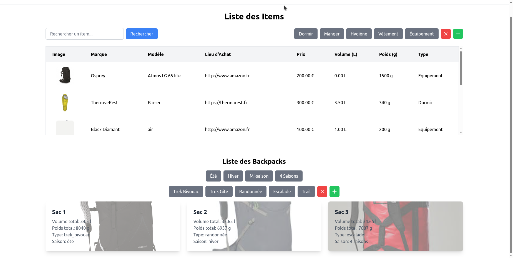
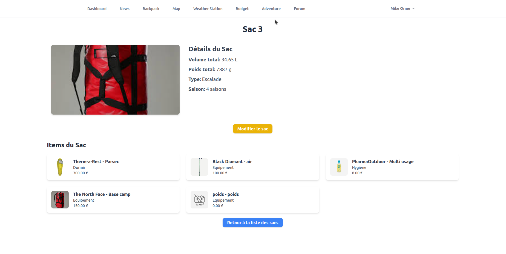
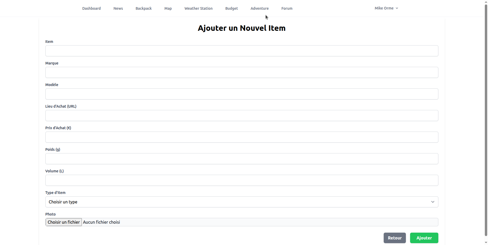
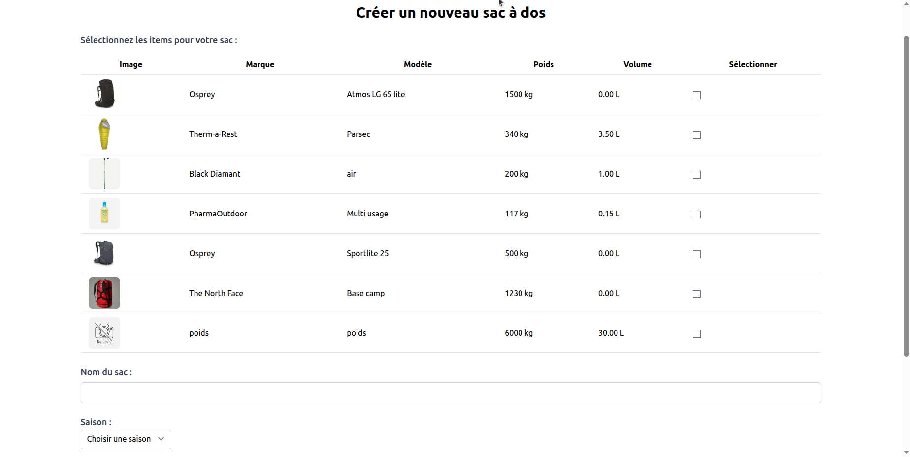
> 2. Itinéraires & Cartographie GPX Interactive
Création d'itinéraires complets (nom, dates, lieu, image, description), gestion de fichiers GPX personnels et visualisation sur une carte interactive plein écran avec activation/désactivation des tracés et accès à une bibliothèque communautaire de traces GPX partagées.
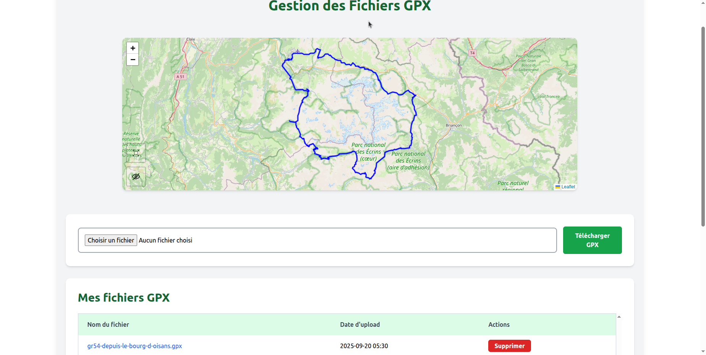
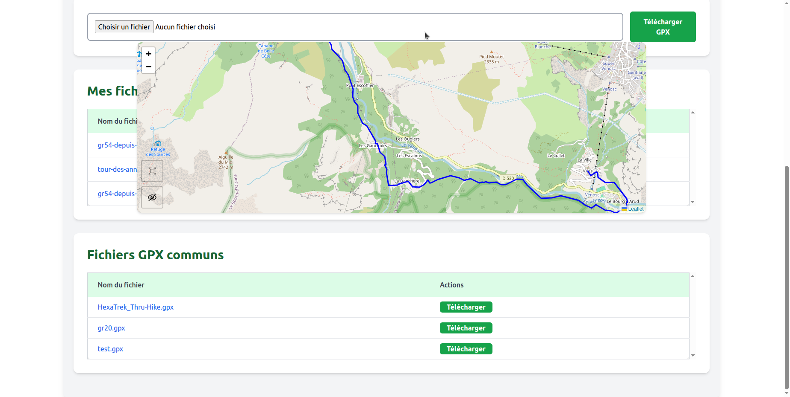
> 3. Météo & Géocodage
Grâce au géocodage via Google Maps et aux prévisions en temps réel et quotidiennes d'Open-Meteo, les utilisateurs peuvent enregistrer leurs lieux favoris et suivre l'évolution des conditions météorologiques avant le départ.
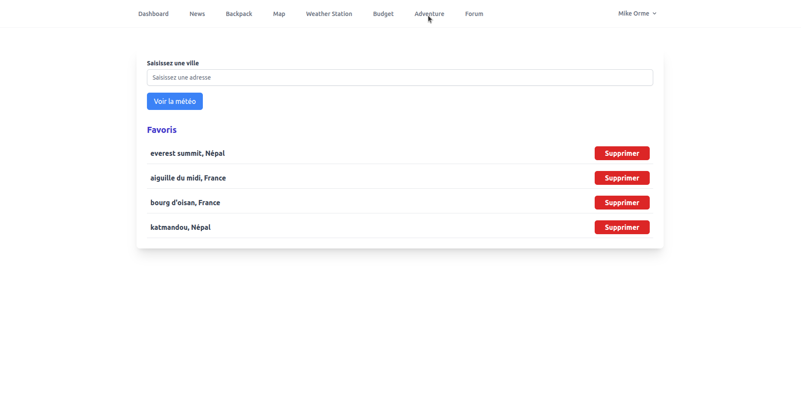
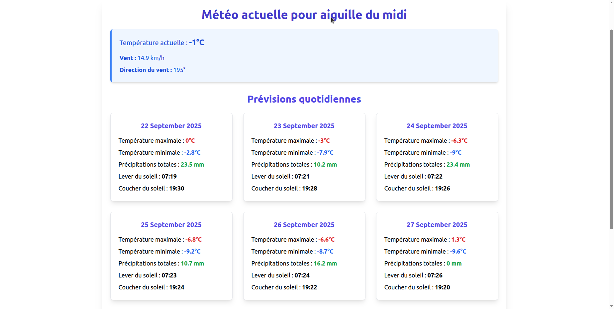
> 4. Budgets Partagés, Forum & Actualités Outdoor
Pour faciliter la préparation à plusieurs, l'application intègre un gestionnaire de budgets par sortie (ajout de participants, enregistrement des transactions et répartition des dépenses), un forum collaboratif ainsi qu'un flux d'actualités outdoor agrégé par RSS (SimplePie).
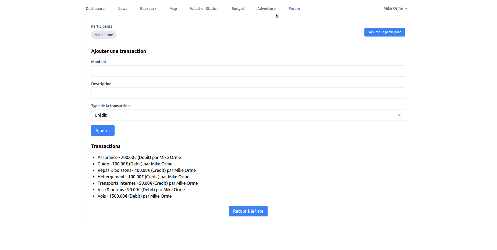
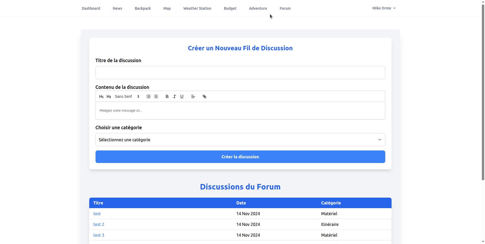
Intégration Hardware : Réseau Mesh LoRa (ESP32)
Trek Organizer s'étend au-delà du web avec des balises matérielles personnalisées basées sur l'ESP32 et le protocole LoRa (Long Range). Conçues pour les « zones blanches » sans couverture cellulaire, elles créent un réseau maillé (mesh) local entre randonneurs.

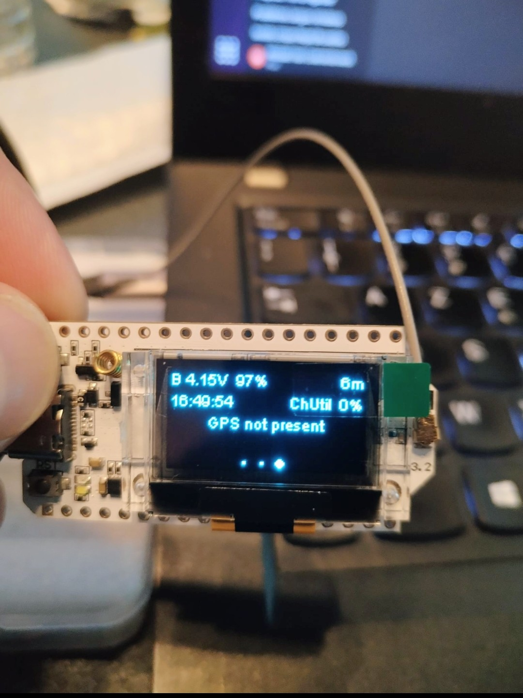
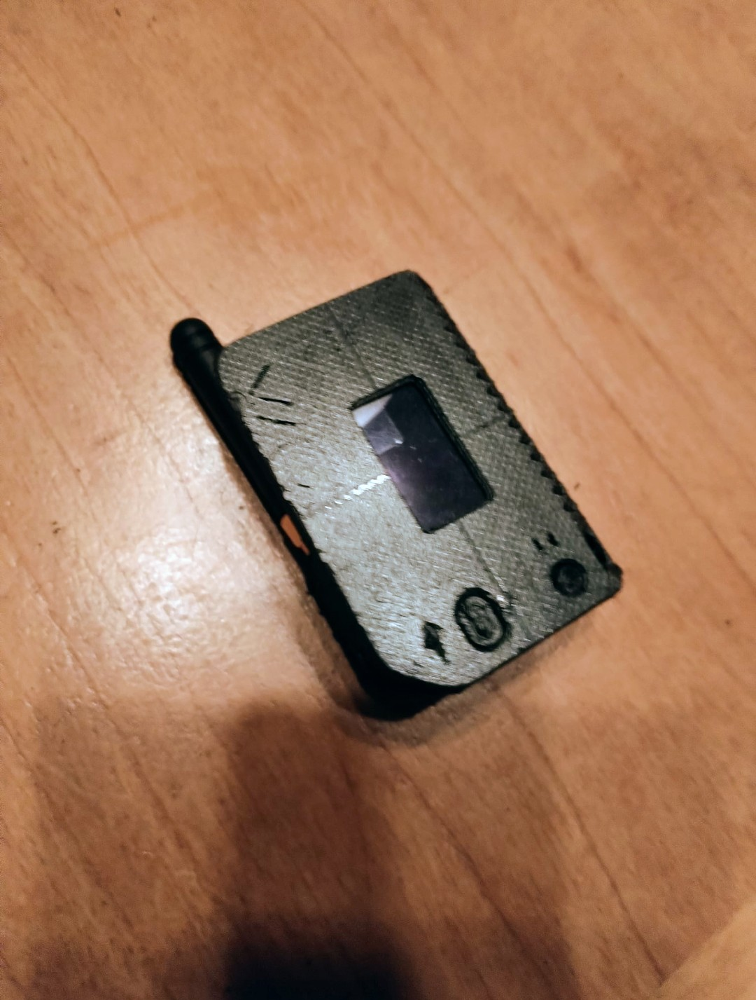
- Connectivité hors ligne : Communication (chat) et partage de position entre appareils sans dépendre des infrastructures télécoms.
- Système d'alerte SOS décentralisé : Diffusion d'alertes de sécurité sur le réseau maillé local.
- Architecture « Data Mule » : Collecte et mise en mémoire tampon des données environnementales hors ligne, puis synchronisation avec la plateforme Trek Organizer via la passerelle du smartphone dès le retour d'une connexion Wi-Fi/4G.
Vision IA & Data Science
Le projet vise à évoluer d'un outil de gestion vers un assistant intelligent et un fournisseur de données scientifiques :
- Edge AI (TinyML) : Réseaux neuronaux légers directement sur l'ESP32 pour la détection autonome de chute et la gestion prédictive de l'énergie.
- Science citoyenne & données environnementales : Cartographie haute résolution des micro-climats, détection d'anomalies (Isolation Forests) et surveillance bioacoustique embarquée.
- Analyse prédictive : Calcul d'ETA personnalisé basé sur le rythme réel de l'utilisateur selon le dénivelé et le terrain.